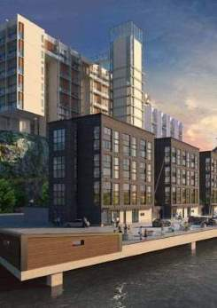

Det första bostadsprojekt på Kvarnholmen är JM:s Kajhusen med läge direkt på norra kajen. Kajhusen har en modern arkitektur men för att husen ska smälta in i den tongivande bruksmiljön har arkitekt, Johan Nyrén (Nyréns Arkitektkontor), valt en rustik fasad i tegel och puts....
Läs mer
Läs mer
Det första bostadsprojekt på Kvarnholmen är JM:s Kajhusen med läge direkt på norra kajen. Kajhusen har en modern arkitektur men för att husen ska smälta in i den tongivande bruksmiljön har arkitekt, Johan Nyrén (Nyréns Arkitektkontor), valt en rustik fasad i tegel och puts....
Läs mer
Läs mer
I den pampiga gamla Qvarnen Tre Kronor utvecklar Riksbyggen ca 160 lägenheter. Riksbyggen kommer att förädla de fastigheter som vetter mot hamninloppet till moderna lägenheter med klassiska arkitektoniska inslag.
Läs mer
Läs mer
| Etapp 1 Norra kajområdet | |
| Etapp 2 Centrala kvarnområdet | |
| Etapp 2 Östra kvarnområdet | |
| Etapp 2 Södra kvarnområdet | |
| Etapp 2 Nordvästra kajområdet/Platån | |
| Etapp 2 Hästholmssundet/Gäddviken |